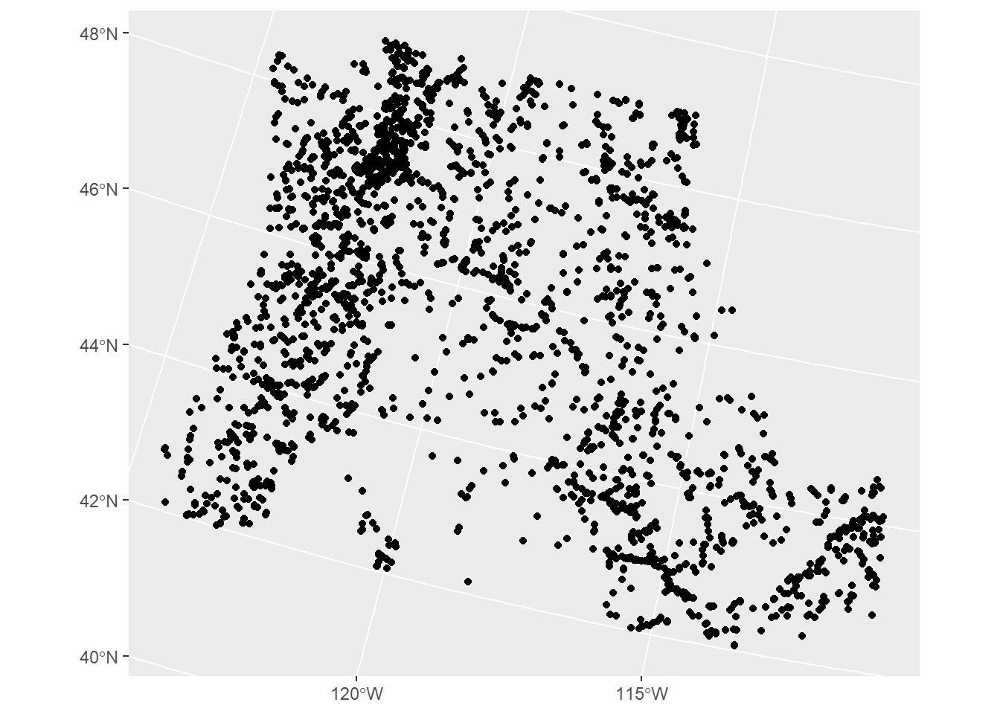

Chapter 8 Extensions to work with GIS software in R
8.1 RQGIS
There’s a bit of overhead to install QGIS and configure RQGIS - I use QGIS but have not set up RQGIS myself, I recommend reading the description in Geocomputation with R
8.2 R-ArcGIS bridge
See this description describing how to link your R install to the R-ArcGIS bridge
8.3 Accessing Python toolbox using reticulate
I use this all the time! I highly recommend this approach if you want to integrate python workflows and libraries (including arcpy) with R workflows within reproducible R markdown files.
library(reticulate)
use_condaenv("StreamCat")We can immediately start playing with python within a code block designated as python
import pandas as pd
print('hello python')## hello pythonsome_dict = {'a':1, 'b':2, 'c':3}
print(some_dict.keys())## dict_keys(['a', 'b', 'c'])Load our gage data in Python…
import pandas as pd
gages = pd.read_csv('C:/Users/mweber/GitProjects/Rspatialworkshop/inst/extdata/Gages_flowdata.csv')
gages.head()## FID_ COMID EVENTDATE ... HUC_REG SUBREGION ACCOUNTING
## 0 NaN 0 11/21/2006 0:00:00 ... 17 1710 171003
## 1 NaN 0 11/21/2006 0:00:00 ... 17 1710 171003
## 2 NaN 0 11/21/2006 0:00:00 ... 17 1712 171200
## 3 NaN 0 11/21/2006 0:00:00 ... 17 1710 171003
## 4 NaN 0 11/21/2006 0:00:00 ... 17 1710 171003
##
## [5 rows x 59 columns]gages['STATE'].unique()## array(['OR', 'ID', 'CA', 'UT', 'NV', 'WY', 'WA', 'MT'], dtype=object)PNW_gages = gages[gages['STATE'].isin(['OR','WA','ID'])]8.3.1 Access Python objects directly from R
Now work with the pandas data directly within R
library(sf)## Warning: package 'sf' was built under R version 4.0.5## Linking to GEOS 3.9.0, GDAL 3.2.1, PROJ 7.2.1library(ggplot2)## Warning: package 'ggplot2' was built under R version 4.0.5gages <- st_as_sf(py$PNW_gages,coords = c('LON_SITE','LAT_SITE'),crs = 4269)
gages <- st_transform(gages, crs=5070) #5070 is Albers system in metres
ggplot(gages) + geom_sf()
8.4 R Whitebox Tools
We won’t go into here but worth mentioning as a rich set of tools you can access in R - whiteboxR
8.5 rgee
I was lucky enough to attend the Google Earth Engine summit pre-pandemic and came away wanting to write [this] exact package](https://github.com/r-spatial/rgee) - someone beat me to it and it’s really slick.
Here I’m just running the demo code in the ReadMe for the rgee package as a proof of concept of cool things you can do being able to leverage Earth Engine directly in R. Note that there is overhead in getting this all set up.
library(reticulate)
library(rgee)
ee_Initialize()
# gm <- import("geemap")Function to create a time band containing image date as years since 1991.
createTimeBand <-function(img) {
year <- ee$Date(img$get('system:time_start'))$get('year')$subtract(1991L)
ee$Image(year)$byte()$addBands(img)
}Using Earth Engine syntax, we ‘Map’ the time band creation helper over the night-time lights collection.
collection <- ee$
ImageCollection('NOAA/DMSP-OLS/NIGHTTIME_LIGHTS')$
select('stable_lights')$
map(createTimeBand)We compute a linear fit over the series of values at each pixel, visualizing the y-intercept in green, and positive/negative slopes as red/blue.
col_reduce <- collection$reduce(ee$Reducer$linearFit())
col_reduce <- col_reduce$addBands(
col_reduce$select('scale'))
ee_print(col_reduce)We make an interactive visualization - pretty cool!
Map$setCenter(9.08203, 47.39835, 3)
Map$addLayer(
eeObject = col_reduce,
visParams = list(
bands = c("scale", "offset", "scale"),
min = 0,
max = c(0.18, 20, -0.18)
),
name = "stable lights trend"
)